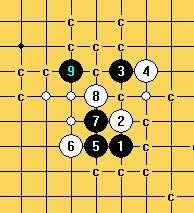
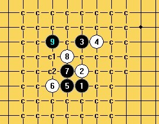
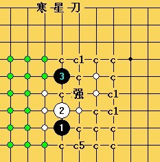

求指点(大寒星)
#1 求指点(大寒星) 作者：侯军学棋 发表时间：2011-4-29 13:45:21
谢谢日月的指点 还有几个10我还是没希望［此帖子已被 侯军学棋 在 2011-4-29 14:02:01 编辑过］
［ 失落刀 于 2011-4-30 8:24:05 时花20金币送鲜花一朵］
［此帖子已被 失落刀 在 2011-4-30 8:24:28 编辑过］
#2 Re:求指点 作者：淡红的秋樱 发表时间：2011-4-29 18:45:17
=======上图对应的爱五子棋谱代码如下，以便你拆解：========
h8h9h11i11g8f8g9g10f11f9e10g12i7j6g7
======================================================
#3 Re:求指点 作者：淡红的秋樱 发表时间：2011-4-29 18:48:16
=======上图对应的爱五子棋谱代码如下，以便你拆解：========
h8h9h11i11g8f8g9g10f11e10f10e11i7j6i8e9e8
======================================================
#4 Re:求指点 作者：淡红的秋樱 发表时间：2011-4-29 18:57:30
=======上图对应的爱五子棋谱代码如下，以便你拆解：========
h8h9h11i11g8f8g9g10f11i10e10j10f10e11f9
======================================================
［ 侯军学棋 于 2011-4-29 22:26:08 时花20金币送鲜花一朵］
［ 失落刀 于 2011-4-30 8:23:09 时奖励此帖[金币加 100 威望加1］
#5 Re:求指点 作者：淡红的秋樱 发表时间：2011-4-29 19:37:38
=======上图对应的爱五子棋谱代码如下，以便你拆解：========
h8h9h11i11g8f8g9g10f11f10e10g12f9d11g5h7i7g7h6j8j6k5i5
======================================================
#6 Re:求指点 作者：淡红的秋樱 发表时间：2011-4-29 20:20:15
=======上图对应的爱五子棋谱代码如下，以便你拆解：========
h8h9h11i11g8f8g9g10f11f10e10d9i7d8h7d11d10e9c7j10h12j7i6f9j6k5f6i8k6l6e5
======================================================
#7 Re:求指点 作者：逆刃 发表时间：2011-4-29 20:27:22
=======上图对应的爱五子棋谱代码如下，以便你拆解：========
h8h9h11i11g8f8g9g10f11f10e10f9
======================================================
=======上图对应的爱五子棋谱代码如下，以便你拆解：========
h8h9h11i11g8f8g9g10f11f9e10f10
======================================================
这个通型最难。
#8 Re:Re:求指点 作者：逆刃 发表时间：2011-4-29 21:20:51
#9 Re:Re:求指点 作者：逆刃 发表时间：2011-4-29 21:22:39
 大寒星一个4.rar
大寒星一个4.rar
［ 侯军学棋 于 2011-4-29 21:50:24 时花20金币送鲜花一朵］
［ 日月丽天 于 2011-4-30 8:59:24 时花20金币送鲜花一朵］
［ 日月丽天 于 2011-4-30 9:01:57 时花20金币送鲜花一朵］
#10 Re:求指点 作者：逆刃 发表时间：2011-4-29 21:23:20
=======上图对应的爱五子棋谱代码如下，以便你拆解：========
h8h9h11i11g10
======================================================
另外这个5有希望必胜，大家拆拆看。
#11 Re:求指点 作者：淡红的秋樱 发表时间：2011-4-29 23:08:30
=======上图对应的爱五子棋谱代码如下，以便你拆解：========
h8h9h11i11g8f8g9g10f11f10e10d9i7d8h7d11d10e9g11f7k7f9f6g7e8c7b6c8c9d7e7f5e6i5h6d5
======================================================
这个19麻烦了，如此21必败的。如6楼19下挡，黑棋安全取胜。
#12 Re:求指点 作者：逆刃 发表时间：2011-4-30 0:02:35
恩，才做的谱，现在电脑重装后软件都没有设置，bug狂多，黑石也用不了。
#13 Re:求指点 作者：絕版賭徒 发表时间：2011-4-30 1:54:06
哇,刀谱现在这么热呀,上面的19必胜,21手换一步就好了=======上图对应的爱五子棋谱代码如下，以便你拆解：========
h8h9h11i11g8f8g9g10f11f10e10d9i7d8h7d11d10e9g11f7f9i6k7j7j8
======================================================
［ 失落刀 于 2011-4-30 8:22:00 时奖励此帖[金币加 100 威望加1］
#14 Re:求指点(大寒星) 作者：安娜制作所 发表时间：2011-5-14 14:45:06
呵呵,侯军,这个早有了啊!除了最强四和次强平四其它一打没有问题了.要什么支路跟我说一下就可以了.原装正谱,没有版权问题.#15 Re:求指点(大寒星) 作者：侯军学棋 发表时间：2011-5-24 13:11:04
我的白点没做 C1只作了一个5谢谢安娜老师［ 冥王哈迪斯 于 2011-5-25 12:18:26 时花20金币送鲜花一朵］
#16 Re:求指点(大寒星) 作者：冥王哈迪斯 发表时间：2011-5-25 12:16:27
军哥很有毅力哈。。
［ 侯军学棋 于 2011-5-25 22:54:27 时花20金币送鲜花一朵］
#17 Re:求指点(大寒星) 作者：侯军学棋 发表时间：2011-5-26 11:28:31
=======上图对应的爱五子棋谱代码如下，以便你拆解：========
h8h9h11i12a1j11b1j10c1k10d1k9
======================================================求教安娜老师弱4两大必胜.谢谢
#18 Re:求指点(大寒星) 作者：安娜制作所 发表时间：2011-6-7 16:22:09
今天才看到,我的QQ:774698435#19 Re:求指点(大寒星) 作者：死劲哭 发表时间：2011-8-1 22:59:34
明教 V5